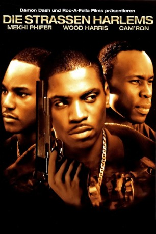
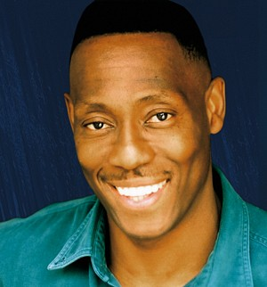
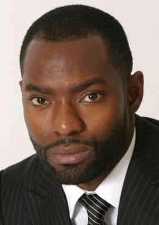

#3389 Die Strassen Harlems
Alternativ: Paid in Full
 
 IMDB-Wertung: 7.1 / 10
IMDB-Wertung: 7.1 / 10  Metascore: 49
Metascore: 49 
Ace (Wood Harris) wächst in den Straßen von Harlem in New York auf. Von Kindesbeinen an kennt er meist nur zwei wahnsinnige Gegensätze – absolute Armut oder glamourösen Reichtum. Da er in ärmlichen Verhältnissen aufwächst, aber auf der Straße mitbekommt, wie man durch illegale Geschäfte schnell zu Unmengen an Geld kommen kann, rutscht er schon in frühen Tagen in eine zwielichtige Welt ab. Im Geschäft mit dem Drogenhandel findet er schnell seinen Platz und als ihm eines Tages noch der Zufall in die Hände spielt, steigt er schnell auf. Ihm steht eine exklusive Quelle für das beste Kokain im ganzen Viertel zur Verfügung. Als dann noch sein bester Freund Mitch (Mekhi Phifer) ins Gefängnis muss, übernimmt er kurzerhand die komplette Kontrolle über den Handel in Harlem. Doch mit seinem Aufstieg zieht er auch Neider und Rivalen an, die auch vor roher Gewalt nicht zurückschrecken. So muss er auch schnell die Schattenseiten des Geschäfts kennenlernen…
Jahr: 2002
Dauer: 94 Minuten
FSK: 16
Land: USA Studio: BVHETonspuren: DD5.1 - ,
Untertitel:
Auflösung: 1080p (1920x1080) Größe: 7372 MB
Genre: Action, Drama, Krimi
Regisseur: Charles Stone III
Drehbuch: Azie Faison Jr., Austin Phillips, Matthew Cirulnick, Thulani Davis
Soundtrack: Frank Fitzpatrick, Vernon Reid
Darsteller:
 Wood Harris als Ace
Wood Harris als Ace Mekhi Phifer als Mitch
Mekhi Phifer als Mitch- Kevin Carroll als Calvin
 Esai Morales als Lulu
Esai Morales als Lulu Chi McBride als Pip
Chi McBride als Pip- Cam'ron als Rico
- Cynthia Martells als Dora
 Elise Neal als Aunt June
Elise Neal als Aunt June Regina Hall als Kiesha
Regina Hall als Kiesha Ron Cephas Jones als Ice
Ron Cephas Jones als Ice- Nelson Tynes als Wedge
- Pedro Salvín als Columbian Man #1
- Jonas Chernick als Detective / Surgeon
- Wes Williams als Mitch's Friend
-  Rufus Crawford als Tommy
- K.C. Collins als Kid #1
 Arnold Pinnock als Wiry Man
Arnold Pinnock als Wiry Man- Tyson Hall als Customer
 Martin Roach als D.C. #2
Martin Roach als D.C. #2- Raven Dauda als Donna
- Anthony Clark als Rico's Buddy #1
- Doug E. Fresh als Himself
 Derrick Simmons als Taunting Guy
Derrick Simmons als Taunting Guy- Damon Dash als Cruiser
 Jamie Hector als Dunn
Jamie Hector als Dunn-  Hassan Johnson als Accomplice
- Tobias Truvillion als Runner
- Hakan Coskuner als Laz
- Shawn M. Richardz als
- Charles Stone III als Director , uncredited
- Remo Greene als Sonny
- Joyce Walker als Janet Woods
- Karen Andrew als Cakes
- Ramon Marroquin als Columbian Man #2
- The World Famous *BoB als The World Famous Brucie B
- Jason Burke als Street Runner
- Geoffrey Antoine als Kid #2
- Flash als D.C. #1
- Noreaga als Runner
- Jesse Gibbons als Antoine
- Rohan Waugh als Andre
- Eduardo Gómez als Columbian #3
- Michael Pope als Rico's Buddy #2
- Busy Bee als Himself
- Khalida Outlaw als Homegirl on Street
- Terrance Telfair als Neutral Kid
- Jermaine Lloyd als Money Counter
- Angie Martinez als Girl in Calvin's Car , uncredited
Datei: X:\2002\Strassen Harlems, Die (2002, FSK16, 1920x1080).mkv seit 31.03.2016
Festplatte: HD 1996-2002
 Es gibt insgesamt 93 Filme in der Gruppe '2002'
Es gibt insgesamt 93 Filme in der Gruppe '2002'